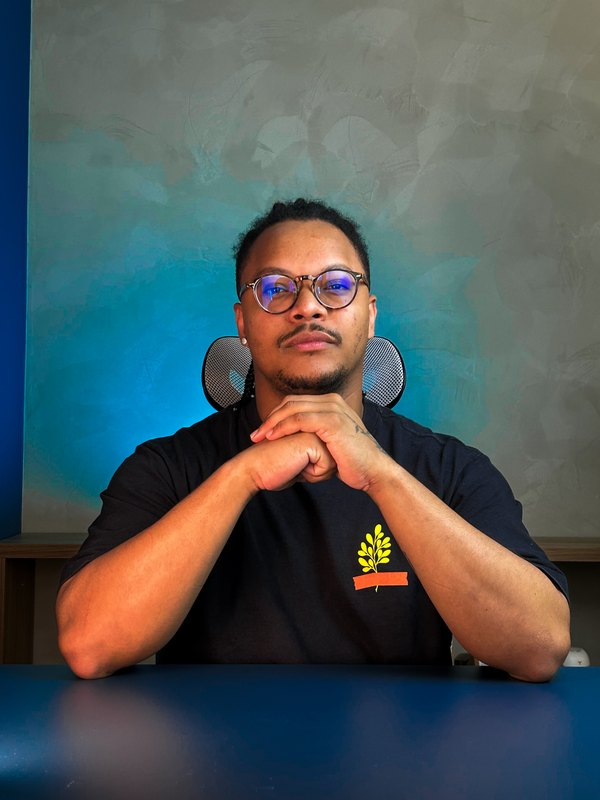
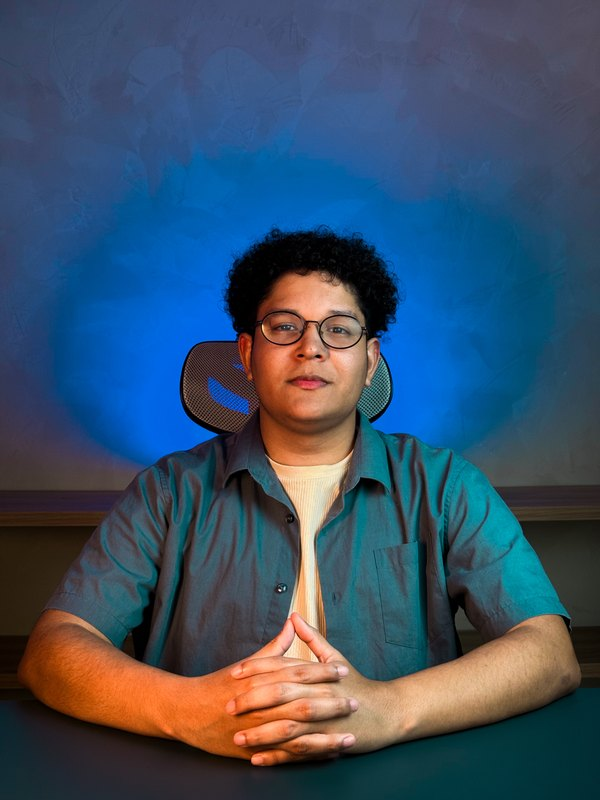
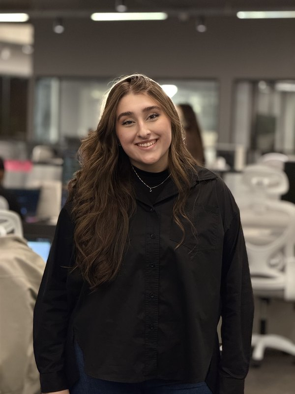
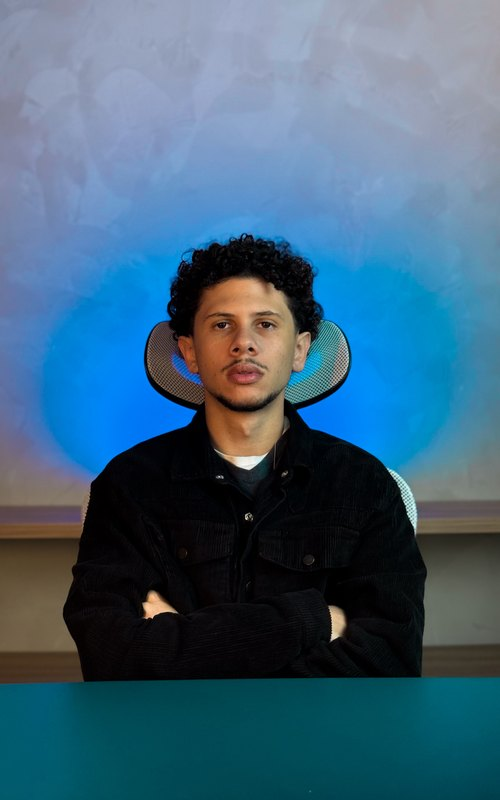
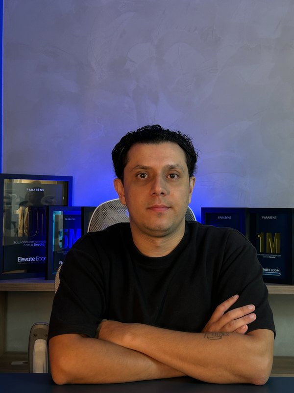

Equipe
Nossa Estrutura de Atendimento
Um time multidisciplinar dedicado à sua operação no TikTok Shop. Nossos squads são setorizados por especialidade: cada marca é atendida pelos quatro squads ao mesmo tempo, cada um cuidando da sua frente (comunicação, ads, operação e creators).
Liderança
T

Talisson
Head
- Direção e visão geral da operação
- Estratégia e padrões da agência
- Padronização de processos
- Relacionamento executivo
K

Klyver
Coordenador
- Coordenação dos squads
- Acompanhamento de metas e entregas
- Garantia de resultado por cliente
- Suporte aos líderes de squad
🦊 Squad Fox · Comunicação & Reuniões
L

Lorena
Comunicação & Relacionamento
- Contato direto no dia a dia
- Reuniões de acompanhamento e FUPs
- Alinhamento de expectativas e prazos
- Ponte entre cliente e time
L
Lucas Munhoz
Comunicação & Relacionamento
- Contato direto no dia a dia
- Reuniões de acompanhamento e FUPs
- Alinhamento de expectativas e prazos
- Ponte entre cliente e time
L
Luis Filippe
Comunicação & Relacionamento
- Contato direto no dia a dia
- Reuniões de acompanhamento e FUPs
- Alinhamento de expectativas e prazos
- Ponte entre cliente e time
G
Guilherme
Comunicação & Relacionamento
- Contato direto no dia a dia
- Reuniões de acompanhamento e FUPs
- Alinhamento de expectativas e prazos
- Ponte entre cliente e time
🦈 Squad Sharks · Ads & Funil de Conversão
D

Davi
Squad Leader · Ads & Funil
- Estrutura de Ads / Paid Media ponta a ponta
- Estratégias de funil de conversão
- GMV Max (Product e LIVE)
- Campanhas de Awareness e escala de mídia
S
Sthefan
Ads & Growth
- Planejamento e otimização de campanhas
- ROI Target, orçamento e criativos
- Estruturação de funil (topo a fundo)
- Leitura de indicadores e escala
🐈 Squad Sphynx · Entregas Operacionais
V

Vinícius
Squad Leader · Operações
- Subida e cadastro de produtos
- Otimização de listagens e SEO
- Qualidade e organização do catálogo
- Rotina de entregas operacionais
L
Leandro
Operações & SEO
- Cadastro e edição de produtos
- Otimização de títulos, imagens e descrições
- SEO de catálogo e variações
- Checklist de qualidade das listagens
L
Lucas Mateus
Operações & SEO
- Cadastro e edição de produtos
- Otimização de títulos, imagens e descrições
- SEO de catálogo e variações
- Checklist de qualidade das listagens
🦅 Squad Falcon · Creators & Campanhas
A
Ana
Squad Leader · Creators & Campanhas
- Estrutura de entregas de creators
- Reuniões de execução de campanhas
- Estruturação de grupos de creators da marca
- Contato e relacionamento com criadores
K
Karoline
Creators & Campanhas
- Recrutamento e aprovação de creators
- Acompanhamento de campanhas
- Gestão do programa de afiliados
- Relacionamento com criadores
L
Leonardo
Creators & Campanhas
- Recrutamento e aprovação de creators
- Acompanhamento de campanhas
- Gestão do programa de afiliados
- Relacionamento com criadores
Cada marca é atendida pelos quatro squads ao mesmo tempo, cada um na sua especialidade (comunicação, ads, operação e creators), durante toda a jornada, da ativação à escala.